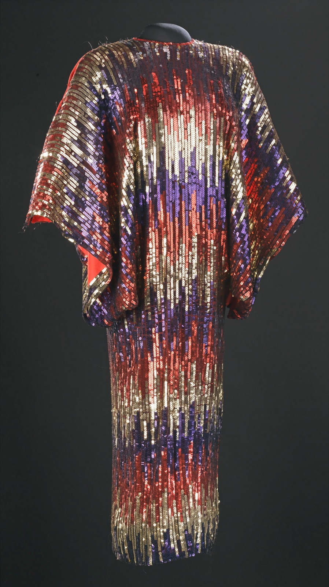
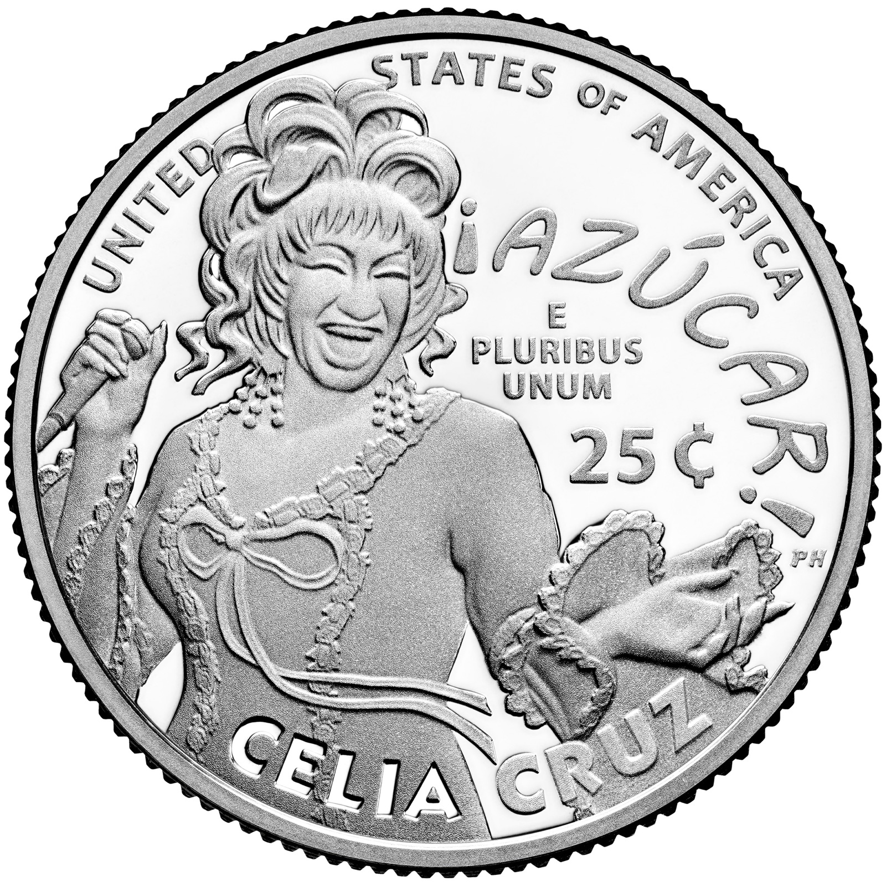

As a girl in Havana, Celia Cruz earned her first pair of shoes by singing for a tourist. Fifty years later she gave her stage shoes to the Smithsonian.

Celia Cruz left Cuba on tour in 1960 and never went back. In exile she became the Queen of Salsa, carried Afro-Cuban music around the world, and received the National Medal of Arts from the President. In 2024 her face appeared on an American quarter, next to her famous cry: "¡Azúcar!"
The document behind this story
Remarks on Presenting Arts and Humanities Awards, 14 October 1994 — President William J. Clinton, 1994-10-14.
When Celia Cruz received the National Medal of Arts in 1994, the President read a short tribute before the First Lady presented the medal. It is the U.S. government's own summary of why she mattered.
Contralto Celia Cruz is known internationally as the Queen of Salsa. Born in Havana, she began her vocal career singing her younger siblings to sleep. It wasn't long, though, before she began electrifying audiences on a larger scale. She's sung with Latin musical greats like La Sonora Matancera, Tito Puente, and Johnny Pacheco. Celia Cruz has used her powerful voice and style to transplant Afro-Cuban music to every corner of the globe.
“Celia Cruz has used her powerful voice and style to transplant Afro-Cuban music to every corner of the globe.” President Bill Clinton, presenting the National Medal of Arts, the White House, 14 October 1994 (item 3).
She was born in Havana on 21 October 1925, into a poor family. According to the Smithsonian, she was one of fourteen children, and her singing began at home. As President Clinton later put it, "she began her vocal career singing her younger siblings to sleep."
That voice soon reached bigger audiences. She went on to sing with the Cuban band La Sonora Matancera.
Soon after Fidel Castro took power in 1959, Cruz was touring in Mexico with La Sonora Matancera. She did not go home. Most accounts date her departure to 1960 and her move to the United States to 1961.
The decision cost her her country. According to her biographers, Castro's government barred her from returning to Cuba. She made her life in New York and New Jersey, and sang about Cuba for the rest of her career.
In the 1970s, the Smithsonian notes, she "helped usher in the popularity of salsa music." She recorded and performed with musicians such as Tito Puente and Johnny Pacheco.
She was as famous for her look as for her voice. Her costumes and towering stage shoes were made by craftspeople including the designer José Enrique Arteaga, a fellow Cuban American, and the shoemaker Miguel Nieto. The sequin dress shown here is one of Arteaga's.
In 1997, at a ceremony marking fifty years of her musical career, she gave a stage costume, shoes and all, to the Smithsonian's National Museum of American History.
On 14 October 1994, on the South Lawn of the White House, President Clinton presented the National Medal of Arts. "Celia Cruz has used her powerful voice and style to transplant Afro-Cuban music to every corner of the globe," he said.
She died in New Jersey on 16 July 2003. In 2005 a bill was introduced in Congress to award her a Congressional Gold Medal, but it never passed. In 2024 the United States Mint put her on a quarter as part of its American Women Quarters program. NBC News reported that she was the first Afro-Latina to appear on a U.S. coin.
The records we found do not give the exact date Celia Cruz arrived in the United States, or when she became an American citizen. One popular biography says 1961, but that is the year she arrived, which makes it unlikely. We have not included a date until a document can confirm it.
Every fact on this page comes from one of these 10 items. Each links to the institution that holds it and gives that institution’s own rights wording.
The anchor: made by a fellow Cuban exile, worn on stage, given to the nation by her estate.
Rights, in the institution’s words: No Known Copyright Restrictions. Proper usage is the responsibility of the user. (Image: Smithsonian Open Access, CC0.)

In 2024 the country she fled to put her on its money.
Rights, in the institution’s words: Public domain (as transcribed on Wikimedia Commons; usmint.gov blocks automated access).
speech transcript
The President's own words as she received the National Medal of Arts on the South Lawn.
Rights, in the institution’s words: (Presidential remarks; U.S. Government work)
object record
Her first pair of shoes was bought by a tourist she sang for; in 1997 she gave her stage costume, shoes and all, to the Smithsonian.
Rights, in the institution’s words: (no image in Open Access; record text read via the Smithsonian Open Access API)
bill record
Latest action 23 Feb 2005: referred to subcommittee. It never became law — she has not received a Congressional Gold Medal, whatever some websites say.
Rights, in the institution’s words: (U.S. Government work)
biography
Birth 21 October 1925; barred from returning to Cuba; death in New Jersey, 16 July 2003. Its claim that she became a citizen in 1961 is NOT used — see the search log.
Rights, in the institution’s words: All rights reserved.
press release
Shipping began 5 August 2024; design by Phebe Hemphill.
Rights, in the institution’s words: (not read — 403 to automated access)
object record
A traditional Cuban 'bata' dress in the colours of the Cuban flag — exile worn on stage. Not currently on view, and not photographed online.
Rights, in the institution’s words: (no image in Open Access; record read via the Smithsonian Open Access API)
object record
Evidence of her salsa-era success with Johnny Pacheco, held in the national collection.
Rights, in the institution’s words: (no image in Open Access; record read via the Smithsonian Open Access API)
news report
Reports that she is the first Afro-Latina featured on a U.S. coin, and the 14th coin in the program.
Rights, in the institution’s words: All rights reserved.
First-person recordings and expert perspectives held by other museums, archives and media organisations. Each links to the institution that holds it.
Interview
Celia Cruz interviewed in 2002, from the Larry Katz collection (The Katz Tapes) at Northeastern University.
Link only: the recording stays with Northeastern University Library Archives and Special Collections. View at Northeastern University Library Archives and Special Collections